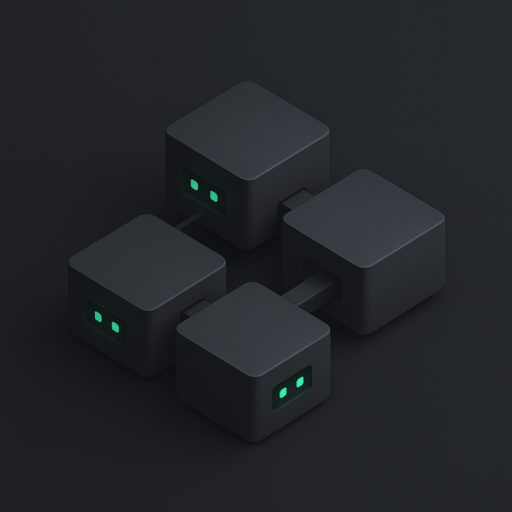

Catalyst designs, develops, and deploys custom websites—from single-page sites to multi-page builds and e-commerce. We also provide strategy, wireframes, and a hi-fi mockup package before development, plus hosting setup and clear handoff documentation. Optional add-ons include consulting, integrations, and ongoing improvements.
The Work
Here are a few websites we’ve developed from the ground up. Click directly on demo to see that site in action.
Client Feedback

“Wils was so easy to work with. He made a very stressful process much easier. He also had great ideas about the website layout, etc. and was amazing at sharing his thoughts. I absolutely love my website! The website is everything I envisioned it would be. I would highly recommend Wils to anyone in need of a website!”
— Lillian M.
Start the reaction. We’ll be the catalyst.
End-to-End Website Development
We take your vision from intent to impact. Every build starts with a clear roadmap - establishing goals, constraints, and acceptance criteria so nothing is left uncertain. Through structured collaboration, we incorporate your feedback without leaving you buried in the details. The result: a site that is not only visually refined but also reliable, accessible, and future-ready. With transparency as our baseline and quality assurance at every layer, you gain a web presence that is authentic and functional.
Start Your Build
Strategic Expertise
Modern technology should be an asset moving your business forward, not a burden weighing it down. Our consulting approach emphasizes clarity and practicality—evaluating tools, integrations, and processes with your long-term goals in mind. We clarify trade-offs, guide strategy, and ensure that implemented solutions remain both flexible and maintainable. With expert guidance at each step, you make informed decisions that increase efficiency, reduce risk, and keep your systems aligned with what matters most.
Streamline Your StackScalable Systems
Growth requires more than patchwork fixes. Your time and resources are best spent where they matter most. Our expertise provides handcrafted workflows and lightweight systems designed to meet your current needs while preparing for organic growth when you're ready. Whether that is general code optimization, scalable data structures, or smooth handovers to new developers, every solution is built with transparency and flexibility in mind to keep you informed and in control. With technical expertise and a feedback‑driven process, we deliver systems that reduce friction, improve reliability, and position your business for sustainable growth.
Optimize Your Operations

Built to move your business forward.
Every project is unique. That’s why we tailor our process to fit your goals, not the other way around. Here’s how we get from vision to launch.
Intake & Alignment
Client and developer alignment is the critical a builds success - no detail is too small. Share goals for the build, branding ideas/materials, and design inspiration to start with clarity, direction, and confidence.
Strategy & Approach
Define deliverables and acceptance criteria to identify results that match expectations and intent. Discuss strategies and options for executing.
Wireframe
Receive an initial skeleton to hone concepts and provide critical feedback. A good low-fi layout locks in navigation, pages, features, and priorities.
Mockup Package
A complete package finalizing design and acceptance criteria for the build stage. Includes hi‑fi mockup and documentation as the main point of reference for both client and developer moving into development.
Build Progress Transparency
Track every step with a shared progress tracker (objectives, due dates, statuses) for real‑time visibility, supported by weekly check‑ins and quick response times.
Setup & Structure
Establish a clean repo, stack, and file structure that supports scalable, maintainable code.
Content Integration
Place your content where it belongs (with placeholders where needed) to create a living framework.
Feature Build
Develop custom functionality and components with industry best practices in mind.
Preview & Free Hosting
Review your site on a live preview link deployed to free hosting for testing and feedback.
Cross-Device QA & Bug Fixes
Test across devices and browsers, squash bugs, and refine functionality before going public.
Domain & SSL Setup
Connect your domain and secure it with SSL for professionalism, trust, and SEO.
Paid Hosting Upgrade
Upgrade hosting for speed, reliability, and scalability — structured for a smooth transition from day one.
Built-In Revision Cycles
Revisions are a core part of the process, not an afterthought. Three 1‑hour meetings are included in Design, Development, and Deployment, with 2 hours of dev time per meeting specifically allocated to feedback implementation.
Agile Improvement
Use these sessions to walk through site features, design, and functionality. Feedback is captured clearly, then applied promptly to keep the build aligned with your needs.
Expert Guidance
Get clear advice on UI/UX and coding approaches that prioritize impact, responsiveness, and long‑term maintainability.
Beyond Included Hours
Additional revisions and subsequent development time needed are quoted hourly, keeping scope efficient and realistic to the original intent. Scope and acceptance criteria expansions are billed the same.
Training & Guidance
Clear resources, documentation, and walk‑throughs guide you to confidently manage your site without relying on guesswork.
Future Roadmap
Ongoing opportunities are documented so your site can evolve alongside your goals.
Post-Launch Support
Take advantage of the builder who knows the ecosystem best. Support is guaranteed for a set window and available hourly afterward.
Flexible Handover
Hosting and repo live under your control, making it easy to fork, redeploy, or hand off to another developer at any point.
SEO Foundations
Visibility built into the site’s DNA with semantic HTML, meta tags, structured content, and best practices.
Conversion Tuning
Refine calls‑to‑action and site flows to maximize engagement and results.
Analytics Setup
Stay informed with a simple dashboard (Google Analytics or other tools) to track traffic and performance trends.
Content Growth Strategy
Expand your reach over time with new pages, blog content, and structured updates that build authority and search ranking.
Clear packages. Flexible by design.
Three starting points to fit your scope and timeline. Every project includes a hi‑fi mockup package, transparent progress tracking, and thoughtful handoff flexibility so you stay in control from day one.
Single Page Site
Best for quick launches and focused messages
$1950+
- ✔ Hi‑fi mockup package & acceptance criteria
- ✔ Built‑in revision cycles (3×1‑hr mtgs + dev time)
- ✔ Responsive build with SEO best practices
- ✔ Live preview link & free staging during build
- ✔ 30‑day post‑launch support window
Full Site+
Multi‑page build with custom components
$4950+
- ✔ Strategy, wireframes, & hi‑fi mockup package
- ✔ Shared build tracker & weekly check‑ins
- ✔ Cross‑device QA, performance & accessibility
- ✔ Domain connection & SSL setup
- ✔ 45‑day post‑launch support window
Large Projects
Complex features, integrations, or e‑commerce
$9,000+
- ✔ Technical discovery & architecture planning
- ✔ Advanced components & integrations
- ✔ Dedicated QA cycles & performance tuning
- ✔ Deployment support & thorough handoff docs
- ✔ 90‑day post‑launch support window
*Prices are starting points and may adjust based on scope, complexity, and do not include third‑party services or subscriptions for your site. Revisions beyond the included meeting/dev hours are billed at the standard hourly rate (detailed here). Client accounts own all third‑party services (domain, hosting, email, fonts, premium plugins) and are directly responsible for their associated costs.
I'm Wils, Founder of Catalyst Web
Catalyst was born out of a lifelong curiosity for technology and a deep love of creative expression. My background spans music, digital media, and full‑stack web production. Over time, those paths naturally converged into something greater. What started as a passion for building things grew into a mission: to create digital spaces that innovate, generate growth, and give businesses the flexibility to reach new heights.
Catalyst isn’t just a brand — it’s the role I strive to play. In science, a catalyst sparks a reaction, helping elements come together and transform into something more powerful. Every project is an opportunity to give your ideas, your vision, and your brand the momentum it needs to connect, grow, and leave a lasting impact.
My goal is to deliver more than just a polished website. I aim to help you unlock potential by building a foundation for growth, visibility, and identity that reflects both who you are and where you’re going. Catalyst exists to be that spark — powered by the collaboration between your vision and the skills I bring. Together, we create momentum that expands far beyond the website itself.
FAQs — clear answers, no jargon.
A growing reference for clients and curious builders. Click a question to expand.
Yes. We can modernize your site’s look and rebuild the technical foundation for speed, accessibility, and mobile responsiveness—keeping what works while improving what doesn’t.
We build with modern web standards (HTML, CSS, JavaScript) and, when appropriate, frameworks like React and Node/Express. For deployment we commonly use Render or Netlify. We choose tools based on your goals—not the other way around.
A wireframe is a low-fidelity layout using boxes that resemble wires. It maps out site structure, navigation, and priorities—without colors or imagery. It validates UX decisions quickly before deeper design and development work.
A mockup is a medium- or high-fidelity design showing the final site’s look: real colors, fonts, images, and layout details. Unlike wireframes, mockups preview exactly how branding, content, and features will come together.
A hi-fi mockup package includes not only the pixel-precise design but also written requirements, UI rules, and component notes. It becomes the “single source of truth” during development—ensuring alignment and reducing costly surprises.
Earlier is better. A simple checklist:
- Brand assets: logos, colors, typography, brand guidelines
- Copy: headlines, text, CTAs, service/product descriptions
- Images/video: high-resolution originals; we optimize for web
- Integrations: booking, forms, calendars, payments, APIs
- Legal: privacy policy, terms, disclaimers
Don’t worry if gaps exist—wireframes and mockups reveal them early, and placeholders can be used until final content is ready.
Clear, well-lit, and professional. Aim for sharp focus, neutral background, and shoulders-up framing. Natural light by a window works great. Avoid heavy filters. We’ll crop and optimize for crisp, fast-loading display.
Writing and photography aren’t included by default, but we can recommend partners or add it on. Stock images are also an option, with licensing guidance provided.
Acceptance criteria are plain-language, testable statements that define what “done” means. They keep scope clear and sign-off objective.
Examples:
“The contact form submits with errors shown inline.”
“On mobile, the nav collapses into a keyboard-accessible menu.”
QA = Quality Assurance: structured testing before launch.
- Functional: forms, buttons, redirects, error states
- Visual/Responsive: layouts across devices/browsers
- Accessibility basics: alt text, color contrast, keyboard nav
- Performance: load time, caching, image optimization
Every project includes QA cycles with bug fixes before go-live.
Single-page sites: 2–6 weeks after mockup approval.
Larger builds: minimum 2–3 months.
Timeline depends on scope, feedback speed, integrations, and content readiness. A custom schedule is set at project start.
We follow a staged approach. For details, see the Process section. Each phase has structured feedback and acceptance criteria so you always know what’s next.
A repository (“repo”) is where your project’s code lives (commonly GitHub). Catalyst retains ownership of the core codebase, but you’re always free to fork (copy) the repo and deploy or extend it however you want.
This model gives you complete freedom and control over your live site while letting us keep the delivered version in our portfolio. You’re never locked in, and we provide notes so forks are easy to run and hand off.
During the build, your repo lives in Catalyst’s GitHub for security and version control. At any point you can fork a full copy into your own GitHub account, with all configuration and environment variables documented for smooth setup.
Staging is a private review environment that mirrors production, used for QA and approvals. Production is the public site. We deploy to staging first, address feedback, then promote the approved build to production.
Yes—production deployments are versioned so we can roll back quickly if needed. For dynamic sites we recommend scheduled database and asset backups via your host. We’ll outline the backup/restore workflow in your handoff notes.
Your domain is the address (example.com). Hosting is the server where your site runs. SSL encrypts traffic (the lock icon) to protect users and improve trust/SEO. We connect your domain, provision SSL, and pick hosting that fits your stack and budget.
Hosting is set up under your accounts (e.g., Render, Netlify) so you control billing and access. You also own your domain, email, fonts, analytics, and all paid third-party services. We configure and document everything at handoff.
Assets on the site (copy, images, branding) are yours. Catalyst maintains the codebase but licenses you to use, edit, and have others extend a fork whenever you choose.
Forms include validation, spam protection (honeypots/reCAPTCHA), and clear success/error states. For reliable email, we send via your domain with authenticated DNS (SPF, DKIM, DMARC) or a transactional provider (e.g., Postmark, SendGrid). We’ll document setup and monitoring.
A responsive site adapts fluidly to phones, tablets, and desktops. We use mobile-first layouts, flexible grids, and media that scale so content remains usable at all sizes.
We target current versions of modern browsers: Chrome, Safari, Firefox, Edge; on mobile we test iOS Safari and Android Chrome. Older or discontinued browsers (e.g., IE) aren’t supported by default. If your audience relies on a specific platform, tell us and we’ll include it in the test matrix.
Yes—scheduling, payments, CRM, analytics, and more. Some integrations may add time or cost; we’ll scope them clearly in advance.
SEO (Search Engine Optimization) improves how discoverable and relevant your pages are in search. It helps drive visibility, traffic, and qualified leads.
Core elements: semantic HTML, clear headings, descriptive titles/meta, fast load times, mobile-friendly layouts, accessible content, and meaningful internal links. We build these fundamentals into every site.
We include on-page SEO fundamentals: clean structure, semantic markup, metadata, sitemap/robots, and performance/accessibility best practices. Ongoing content strategy, backlink outreach, and campaigns are optional add-ons.
We build with a performance-first mindset: lean scripts, image optimization (WebP/AVIF where supported), responsive images, lazy-loading, caching/CDN configuration, and Core Web Vitals awareness. Performance also supports SEO and accessibility.
Yes. We can set up Google Analytics or privacy-friendly alternatives (Plausible, Umami). You own the accounts; we configure events/goals and a simple dashboard so you can track traffic and key actions.
We take a privacy-first approach: minimize third-party scripts, honor “Do Not Track” where practical, and load analytics in a privacy-aware way. If your business requires consent banners (e.g., GDPR/CCPA), we can integrate a compliant banner and categories. We’ll help connect it to analytics so tracking respects choices. (This isn’t legal advice.)
A local maximum is a “good-enough” solution that hides a better one. We step back to survey constraints, goals, and options so we don’t stop at the first peak—aiming for a higher maximum: longer-term impact over quick wins.
Projects include structured revision cycles at key phases (Design, Development, Deployment). Each cycle usually has a review call plus dedicated dev hours to implement updates. Extra revisions beyond scope are billed hourly with estimates provided up front.
Minor adjustments are fine and usually fit within revision time. Major changes (new layouts, features, or direction) are treated as scope changes and quoted separately.
Yes. We build in staging, run redirects and content audits, then switch DNS at go-live to avoid interruptions. We preserve important URLs where possible and add 301 redirects to protect SEO.
No problem. We can scope a new project or work hourly. Because you can fork the repo at any time, another developer can also extend the site without downtime.
Yes. We can assist with migrations, upgrades, or redeploys for an additional fee. Because your services are in your own accounts, you keep full control during and after any changes.
You own your domain, hosting, email, fonts, analytics, and any paid third-party services—these stay under your accounts. You also own the assets on the site (copy, images, branding, and any materials you provide).
Catalyst retains ownership of the custom codebase but grants you a permanent license to use, edit, and approve others to work on a fork. You (or another developer) can deploy that fork to production at any time. You keep total control of the live site, and we retain access to the delivered version for portfolio/marketing.
Each package includes a defined post-launch support window (typically 30–90 days). After that, we’re available hourly for fixes, improvements, or new features—at your pace.
Post-launch support is a short included window for bug fixes and polish. Ongoing maintenance is optional and covers updates, audits, enhancements, and monitoring—hourly or on retainer.
Yes—clear documentation and, if requested, a recorded walkthrough so you can manage content without guesswork.
Scope, complexity, integrations, custom design, and timeline. Packages are starting points—third-party services and add-ons (SEO campaigns, hosting upgrades, content creation) are billed directly to you.
A deposit secures your project. Remaining payments are tied to milestones (e.g., mockup approval, pre-launch, handoff). Payments are non-refundable and cover work completed to that stage.
ACH/bank transfer, Zelle, or PayPal. Ask if you need another method—we can often accommodate.
If you want a CMS, we’ll recommend a right-sized option—from lightweight Markdown flows to headless platforms like Contentful or Sanity. The goal is easy updates without unnecessary complexity.
Yes. Accessibility is baseline: keyboard navigation, focus states, headings/landmarks, alt text, color contrast, and common screen-reader paths. Inclusive sites are better for users and better for business.
Yes—we can add multilingual functionality and advise on best practices for content and URL structure.
We occasionally offer discounts for nonprofits. Share your mission and we’ll see what’s possible.
Gather a few example sites you like (and why), your brand assets (logo, colors, fonts), and any messaging or copy drafts. If you have specific features in mind, note them—it helps frame scope and acceptance criteria together.
Get in Touch
Have a project in mind? Let’s talk. Fill out the form and I’ll get back to you soon.
Or reach out directly at wils@catalystwebdev.com